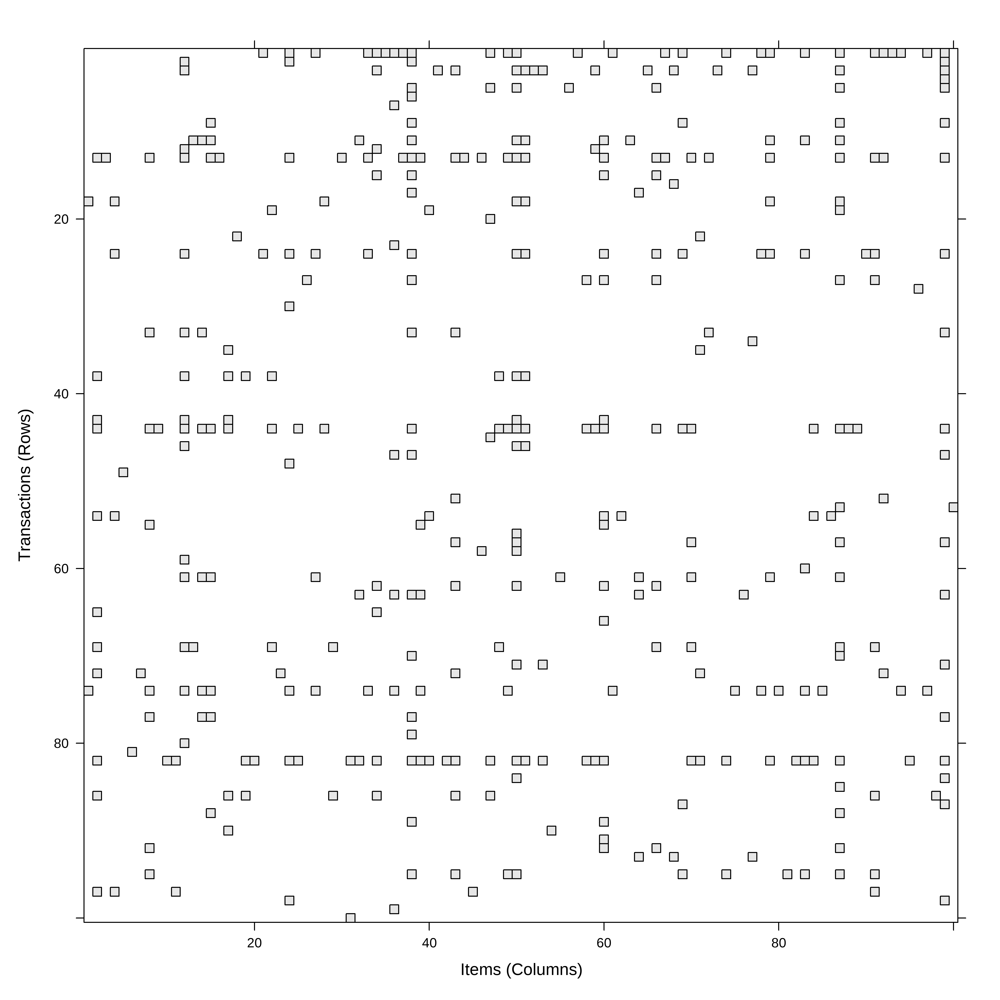
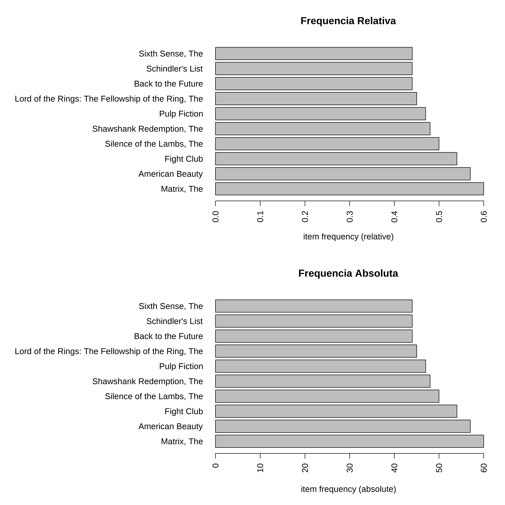
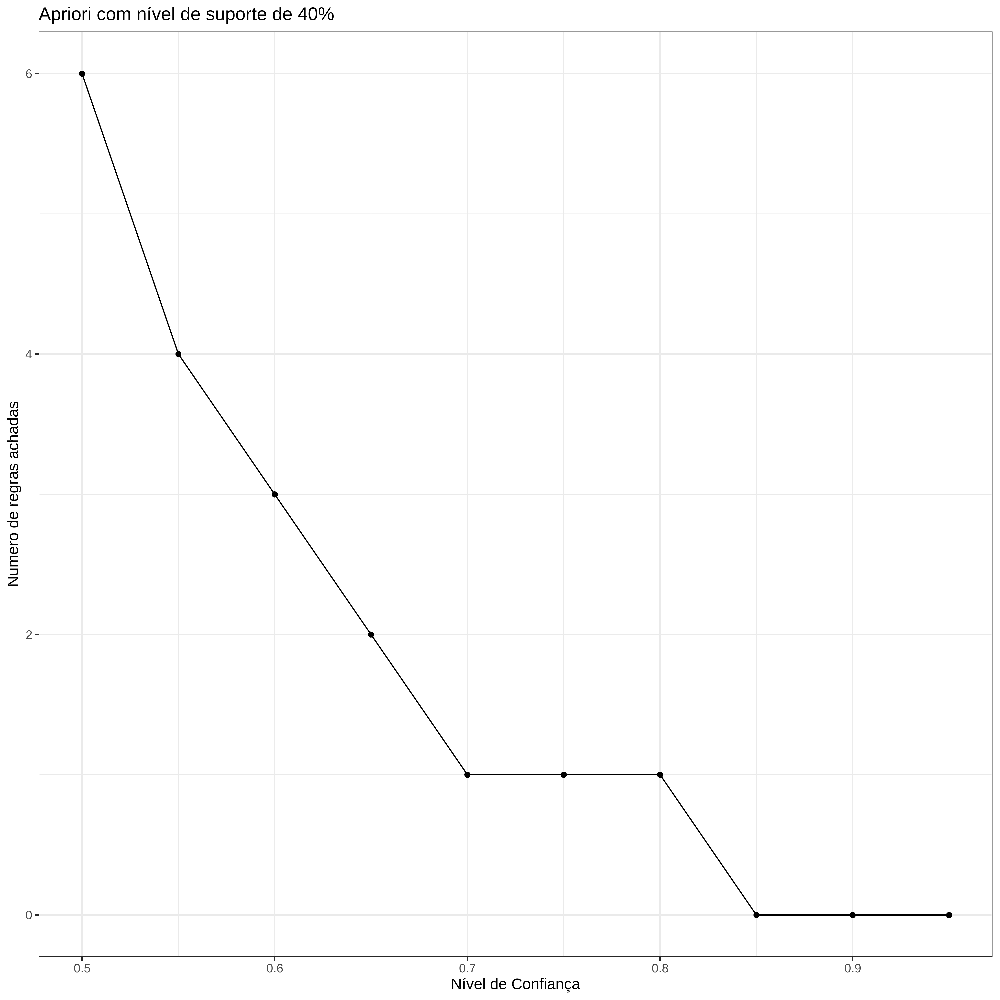
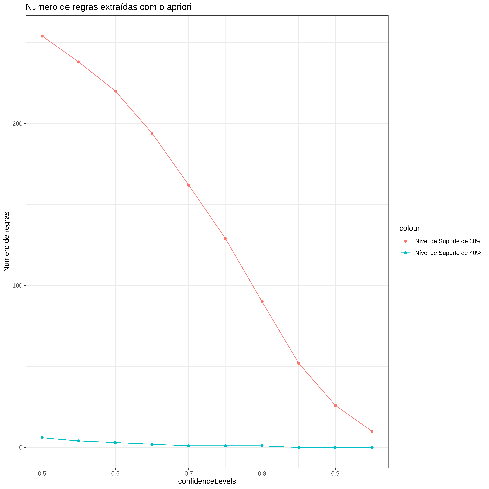
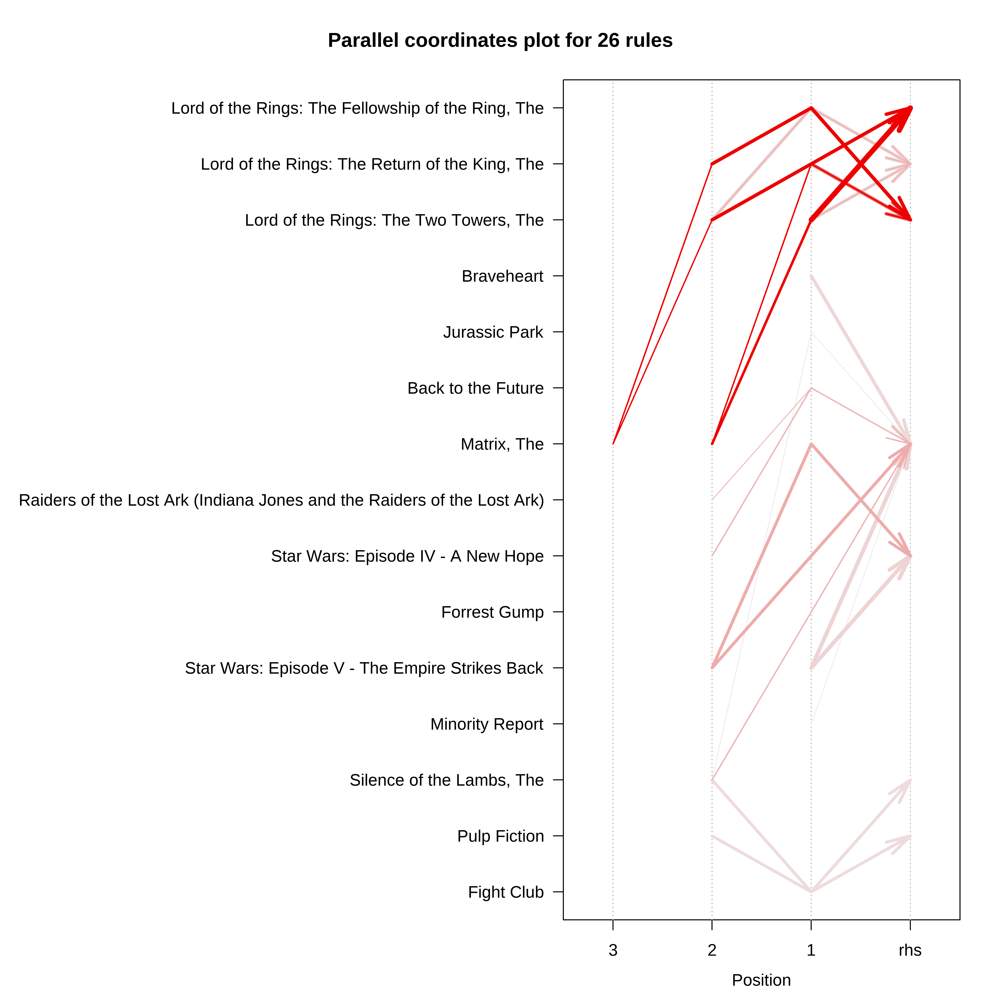

library(tidyverse)
library(arules)
library(arulesViz)Análise de Associação
Este exemplo de Análise de Associação foi baseado no curso do DataCamp “Market Basket Analysis”
As bibilotecas usadas são as arules e arulesViz.
Bibliotecas
Dados
O conjunto de dados Movies consiste de
library(readxl)
filmes <- read_excel("Movie_subset.xlsx")
str(filmes)tibble [19,455 × 5] (S3: tbl_df/tbl/data.frame)
$ userId : num [1:19455] 1323 1323 1323 1323 1323 ...
$ movieId: num [1:19455] 1 3 5 10 11 12 15 16 17 19 ...
$ title : chr [1:19455] "Toy Story" "Grumpier Old Men" "Father of the Bride Part II" "GoldenEye" ...
$ year : num [1:19455] 1995 1995 1995 1995 1995 ...
$ genres : chr [1:19455] "Adventure|Animation|Children|Comedy|Fantasy" "Comedy|Romance" "Comedy" "Action|Adventure|Thriller" ...head(filmes)# A tibble: 6 × 5
userId movieId title year genres
<dbl> <dbl> <chr> <dbl> <chr>
1 1323 1 Toy Story 1995 Adventure|Animation|Children…
2 1323 3 Grumpier Old Men 1995 Comedy|Romance
3 1323 5 Father of the Bride Part II 1995 Comedy
4 1323 10 GoldenEye 1995 Action|Adventure|Thriller
5 1323 11 American President, The 1995 Comedy|Drama|Romance
6 1323 12 Dracula: Dead and Loving It 1995 Comedy|Horror Explorando os dados
n_distinct(filmes$title)[1] 4508n_distinct(filmes$userId)[1] 100filmes %>%
group_by(userId) %>%
summarise(n_filmes = n_distinct(movieId)) %>%
ggplot(aes(x = n_filmes)) +
geom_bar() +
ggtitle("Distribuição do número de filmes vistos")
Tranformando em Transações
lista_de_filmes <- split(filmes$title, filmes$userId)
filmes_trx = as(lista_de_filmes, "transactions")
#Imagem de parte das transações
image(filmes_trx[1:100,1:100])
Visualizando as transações
A biblioteca arules tem funções para visualização das transações masi frequentes.
Elas podem ser vistas na forma de frequencias absolutas ou relativas.
Frequencia Relativa e Absoluta
par(mfrow=c(2,1))
itemFrequencyPlot(filmes_trx,
type = "relative",
topN = 10,
horiz = TRUE,
main = 'Frequencia Relativa')
itemFrequencyPlot(filmes_trx,
type = "absolute",
topN = 10,
horiz = TRUE,
main = 'Frequencia Absoluta')
Mostrando os filmes menos populares
Para mostrar o final da lista de prefrência é necessário utilizarmos funções adicionais.
par(mar=c(2,30,2,2), mfrow=c(1,1))
barplot(sort(table(unlist(LIST(filmes_trx))))[1:10],
horiz = TRUE,
las = 1,
main = 'Menos populares')
Extraindo os filmes mais frequentes
A função apriori que aplica o algoritmo de mesmo nome permite que obtenhamos a lista de filmes mais frequentes e também as regras criadas a partir da utilização do algoritmo.
Neste exemplo somente o suporte teve um limite mínimo defindo
conj_filmes <- apriori(filmes_trx,
parameter = list(support = 0.4,
target = 'frequent'
))Apriori
Parameter specification:
confidence minval smax arem aval originalSupport maxtime support minlen
NA 0.1 1 none FALSE TRUE 5 0.4 1
maxlen target ext
10 frequent itemsets TRUE
Algorithmic control:
filter tree heap memopt load sort verbose
0.1 TRUE TRUE FALSE TRUE 2 TRUE
Absolute minimum support count: 40
set item appearances ...[0 item(s)] done [0.00s].
set transactions ...[4508 item(s), 100 transaction(s)] done [0.00s].
sorting and recoding items ... [15 item(s)] done [0.00s].
creating transaction tree ... done [0.00s].
checking subsets of size 1 2 done [0.00s].
sorting transactions ... done [0.00s].
writing ... [16 set(s)] done [0.00s].
creating S4 object ... done [0.00s].inspect(sort(conj_filmes, by='support', decreasing = T)[1:5]) items support count
[1] {Matrix, The} 0.60 60
[2] {American Beauty} 0.57 57
[3] {Fight Club} 0.54 54
[4] {Silence of the Lambs, The} 0.50 50
[5] {Shawshank Redemption, The} 0.48 48 Neste exemplo eliminamos os conjuntos com um só elemento e reduzimos o suporte para 30%
itemset2 = apriori(filmes_trx, parameter =
list(support = 0.3,
minlen = 2,
target = 'frequent'
))Apriori
Parameter specification:
confidence minval smax arem aval originalSupport maxtime support minlen
NA 0.1 1 none FALSE TRUE 5 0.3 2
maxlen target ext
10 frequent itemsets TRUE
Algorithmic control:
filter tree heap memopt load sort verbose
0.1 TRUE TRUE FALSE TRUE 2 TRUE
Absolute minimum support count: 30
set item appearances ...[0 item(s)] done [0.00s].
set transactions ...[4508 item(s), 100 transaction(s)] done [0.00s].
sorting and recoding items ... [56 item(s)] done [0.00s].
creating transaction tree ... done [0.00s].
checking subsets of size 1 2 3 4 done [0.00s].
sorting transactions ... done [0.00s].
writing ... [115 set(s)] done [0.00s].
creating S4 object ... done [0.00s].inspect(sort(itemset2,
by='support', decreasing = T)[1:5]) items support count
[1] {Matrix, The,
Silence of the Lambs, The} 0.40 40
[2] {Lord of the Rings: The Fellowship of the Ring, The,
Lord of the Rings: The Two Towers, The} 0.38 38
[3] {American Beauty,
Pulp Fiction} 0.38 38
[4] {Pulp Fiction,
Silence of the Lambs, The} 0.38 38
[5] {Matrix, The,
Star Wars: Episode IV - A New Hope} 0.38 38Aqui invertemos a ordem apresentando os 5 menos populares
inspect(sort(itemset2,
by='support', decreasing = F)[1:5]) items support count
[1] {Matrix, The, Minority Report} 0.3 30
[2] {Matrix, The, Shrek} 0.3 30
[3] {Pulp Fiction, Schindler's List} 0.3 30
[4] {Braveheart, Jurassic Park} 0.3 30
[5] {Braveheart, Star Wars: Episode IV - A New Hope} 0.3 30 Avaliando diferentes níveis de confiança
Usando o suporte de 40% e 30% vamos ver as diferenças nos números de regras, variando o nível de confiança.
confidenceLevels = seq(from=0.95, to=0.5, by=-0.05)
regras_sup04 <- NULL
for (i in 1:length(confidenceLevels))
{
regras_sup04[i] =
length(apriori(filmes_trx,
parameter=list(sup=0.40,
conf=confidenceLevels[i],
target="rules")))
}
regras_sup03 <- NULL
for (i in 1:length(confidenceLevels))
{
regras_sup03[i] =
length(apriori(filmes_trx,
parameter=list(sup=0.30,
conf=confidenceLevels[i],
target="rules")))
}Número de regras com suporte de 40%
qplot(confidenceLevels, regras_sup04,
geom=c("point", "line"),xlab="Nível de Confiança",
ylab="Numero de regras achadas",
main="Apriori com nível de suporte de 40%") +
theme_bw()
Visualizando os resultados
n_regras <- data.frame(regras_sup04, regras_sup03,
confidenceLevels)
# 40% e 30%
ggplot(data=n_regras, aes(x=confidenceLevels)) +
# regras_sup04
geom_line(aes(y= regras_sup04, colour="Nível de Suporte de 40%")) +
geom_point(aes(y=regras_sup04,colour="Nível de Suporte de 40%")) +
# regras_sup03
geom_line(aes(y=regras_sup03, colour="Nível de Suporte de 30%")) +
geom_point(aes(y=regras_sup03,colour="Nível de Suporte de 30%")) +
#
theme_bw() + ylab("Numero de regras") +
ggtitle("Numero de regras extraídas com o apriori")
Extraindo regras
regras_filmes2 = apriori(filmes_trx,
parameter = list(supp = 0.3,
conf = 0.9,
minlen = 2),
appearance = list(rhs="Matrix, The"),
control = list(verbose=F))
inspect(regras_filmes2) lhs rhs support confidence coverage lift count
[1] {Minority Report} => {Matrix, The} 0.30 0.9090909 0.33 1.515152 30
[2] {Braveheart} => {Matrix, The} 0.35 0.9210526 0.38 1.535088 35
[3] {Star Wars: Episode V - The Empire Strikes Back} => {Matrix, The} 0.36 0.9230769 0.39 1.538462 36
[4] {Jurassic Park,
Silence of the Lambs, The} => {Matrix, The} 0.30 0.9090909 0.33 1.515152 30
[5] {Star Wars: Episode IV - A New Hope,
Star Wars: Episode V - The Empire Strikes Back} => {Matrix, The} 0.34 0.9444444 0.36 1.574074 34
[6] {Back to the Future,
Raiders of the Lost Ark (Indiana Jones and the Raiders of the Lost Ark)} => {Matrix, The} 0.30 0.9375000 0.32 1.562500 30
[7] {Forrest Gump,
Silence of the Lambs, The} => {Matrix, The} 0.31 0.9393939 0.33 1.565657 31
[8] {Back to the Future,
Star Wars: Episode IV - A New Hope} => {Matrix, The} 0.31 0.9393939 0.33 1.565657 31Visualizado como um gráfico de dispersão
As medidas selecionadas são confiança e interesse (lift)
regras_filmes = apriori(filmes_trx,
parameter = list(supp = 0.3,
conf = 0.9,
minlen = 2,
target = "rules"))Apriori
Parameter specification:
confidence minval smax arem aval originalSupport maxtime support minlen
0.9 0.1 1 none FALSE TRUE 5 0.3 2
maxlen target ext
10 rules TRUE
Algorithmic control:
filter tree heap memopt load sort verbose
0.1 TRUE TRUE FALSE TRUE 2 TRUE
Absolute minimum support count: 30
set item appearances ...[0 item(s)] done [0.00s].
set transactions ...[4508 item(s), 100 transaction(s)] done [0.00s].
sorting and recoding items ... [56 item(s)] done [0.00s].
creating transaction tree ... done [0.00s].
checking subsets of size 1 2 3 4 done [0.00s].
writing ... [26 rule(s)] done [0.00s].
creating S4 object ... done [0.00s].plot(regras_filmes,
measure = c("confidence", "lift"),
shading = "support",
jitter = 1,
engine ="html")# Interactive matrix-based plot
plot(regras_filmes, method = "matrix",
shading ="confidence",
engine = "html"
)# Parallel coordinate plots with confidence as color coding
plot(regras_filmes,
method = "paracoord",
shading = "confidence")
# Plot movie rules as a graph
plot(regras_filmes,
method = "graph",
engine = "htmlwidget")# Retrieve the top 10 rules with highest confidence
top10_rules_movies = head(sort(regras_filmes,by="confidence"),10)
# Plot as an interactive graph the top 10 rules
plot(top10_rules_movies,
method = "graph",engine = "htmlwidget")Extraindo regras com um determinando filme
# Extract rules with Pulp Fiction on the right side
pulpfiction_rules_rhs = apriori(filmes_trx,
parameter = list(supp = 0.3,
conf = 0.5),
appearance = list(default = "lhs",
rhs = "Pulp Fiction")) Apriori
Parameter specification:
confidence minval smax arem aval originalSupport maxtime support minlen
0.5 0.1 1 none FALSE TRUE 5 0.3 1
maxlen target ext
10 rules TRUE
Algorithmic control:
filter tree heap memopt load sort verbose
0.1 TRUE TRUE FALSE TRUE 2 TRUE
Absolute minimum support count: 30
set item appearances ...[1 item(s)] done [0.00s].
set transactions ...[4508 item(s), 100 transaction(s)] done [0.00s].
sorting and recoding items ... [56 item(s)] done [0.00s].
creating transaction tree ... done [0.00s].
checking subsets of size 1 2 3 4 done [0.00s].
writing ... [19 rule(s)] done [0.00s].
creating S4 object ... done [0.00s].# Inspect the first rules
inspect(head(pulpfiction_rules_rhs,5)) lhs rhs support confidence coverage lift count
[1] {Schindler's List} => {Pulp Fiction} 0.30 0.6818182 0.44 1.450677 30
[2] {Jurassic Park} => {Pulp Fiction} 0.31 0.7209302 0.43 1.533894 31
[3] {Seven (a.k.a. Se7en)} => {Pulp Fiction} 0.30 0.8108108 0.37 1.725129 30
[4] {Lord of the Rings: The Fellowship of the Ring, The} => {Pulp Fiction} 0.31 0.6888889 0.45 1.465721 31
[5] {Sixth Sense, The} => {Pulp Fiction} 0.31 0.7045455 0.44 1.499033 31# Find rules with highest lift
inspect(head(sort(pulpfiction_rules_rhs, by="lift"), 10)) lhs rhs support confidence coverage lift count
[1] {Fight Club,
Silence of the Lambs, The} => {Pulp Fiction} 0.34 0.9189189 0.37 1.955147 34
[2] {American Beauty,
Silence of the Lambs, The} => {Pulp Fiction} 0.31 0.8857143 0.35 1.884498 31
[3] {Shawshank Redemption, The,
Silence of the Lambs, The} => {Pulp Fiction} 0.31 0.8857143 0.35 1.884498 31
[4] {Fight Club,
Matrix, The} => {Pulp Fiction} 0.30 0.8333333 0.36 1.773050 30
[5] {Seven (a.k.a. Se7en)} => {Pulp Fiction} 0.30 0.8108108 0.37 1.725129 30
[6] {American Beauty,
Matrix, The} => {Pulp Fiction} 0.30 0.8108108 0.37 1.725129 30
[7] {Matrix, The,
Silence of the Lambs, The} => {Pulp Fiction} 0.32 0.8000000 0.40 1.702128 32
[8] {American Beauty,
Fight Club} => {Pulp Fiction} 0.30 0.7894737 0.38 1.679731 30
[9] {Forrest Gump} => {Pulp Fiction} 0.33 0.7857143 0.42 1.671733 33
[10] {Silence of the Lambs, The} => {Pulp Fiction} 0.38 0.7600000 0.50 1.617021 38Extraindo regras com um filme na esquerda
# Extract rules with Pulp Fiction on the left side
pulpfiction_rules_lhs = apriori(filmes_trx,
parameter = list(supp = 0.3,
conf = 0.5,
minlen = 2),
appearance = list(
default = "rhs",
lhs = "Pulp Fiction")) Apriori
Parameter specification:
confidence minval smax arem aval originalSupport maxtime support minlen
0.5 0.1 1 none FALSE TRUE 5 0.3 2
maxlen target ext
10 rules TRUE
Algorithmic control:
filter tree heap memopt load sort verbose
0.1 TRUE TRUE FALSE TRUE 2 TRUE
Absolute minimum support count: 30
set item appearances ...[1 item(s)] done [0.00s].
set transactions ...[4508 item(s), 100 transaction(s)] done [0.00s].
sorting and recoding items ... [56 item(s)] done [0.00s].
creating transaction tree ... done [0.00s].
checking subsets of size 1 2 done [0.00s].
writing ... [12 rule(s)] done [0.00s].
creating S4 object ... done [0.00s].# Inspect the first rules
inspect(head(pulpfiction_rules_lhs)) lhs rhs support confidence coverage lift count
[1] {Pulp Fiction} => {Schindler's List} 0.30 0.6382979 0.47 1.450677 30
[2] {Pulp Fiction} => {Jurassic Park} 0.31 0.6595745 0.47 1.533894 31
[3] {Pulp Fiction} => {Seven (a.k.a. Se7en)} 0.30 0.6382979 0.47 1.725129 30
[4] {Pulp Fiction} => {Lord of the Rings: The Fellowship of the Ring, The} 0.31 0.6595745 0.47 1.465721 31
[5] {Pulp Fiction} => {Sixth Sense, The} 0.31 0.6595745 0.47 1.499033 31
[6] {Pulp Fiction} => {Forrest Gump} 0.33 0.7021277 0.47 1.671733 33